Chapter 7: Nouns, gender aur plurals¶
Le nom : genre et nombre
French me har noun ya to masculine hota hai ya feminine — sirf log nahi, mez, vichaar aur chai ke cup bhi. Gender article, adjectives aur aage chalkar pronouns ko decide karta hai, isliye ye poori language ki pehli eent hai. Achhi khabar: noun ka ending aksar uska gender bata deta hai.
- 1Do genders, aur ye kyun matter karte hain
- 2Endings jo gender batate hain
- 3Doosre sanket: matlab, aur do genders wale words
- 4Logon aur janwaron ka feminine banana
- 5Plurals: aam taur par bas -s (jo sunai nahi deta)
- 6Galtiyan jo learners sach me karte hain
- 7Asli zindagi me — market me
masculinefeminineplural
Ek line me
Har French noun masculine (le, un) ya feminine (la, une) hota hai: naya noun hamesha uske article ke saath seekho.
Is chapter me colour madad karta hai: neela = masculine, gulaabi = feminine, baingani = plural.
- le livre — kitaab (masculine) [luh LEEVR]
- la table — mez (feminine) [la TABL]
- un garçon et une fille — ek ladka aur ek ladki [ɛ̃ gar-SÕ ay ewn FEEY]
- les livres — kitaabein (plural — dono genders ke liye same article) [lay LEEVR]
7.1 Do genders, aur ye kyun matter karte hain¶
French me do grammatical genders hain. Logon aur kai janwaron ke liye gender sex ke hisaab se hota hai: le père (pita) masculine hai, la mère (maa) feminine hai. Cheezon aur vichaaron ke liye gender bas ek grammar label hai. Mez kisi asli maane me “female” nahi hai — word table bas feminine class ka hissa hai.
Agar tum Hindi bolte ho, to ye system tumhe pehle se pata hai. Hindi bhi har noun ko ek gender deti hai: kitaab feminine hai, ghar masculine hai, aur tum use verb ya adjective me sunte ho: achhi kitaab, bada ghar. French bhi yahi karti hai, lekin mukhya signal noun ke aage wala article hota hai.
| Masculine | Feminine | Plural (both) | |
|---|---|---|---|
| “the” | le / l’ | la / l’ | les |
| “a / some” | un | une | des |
| example | le chat | la maison | les chats |
Articles ka apna poora chapter hai (dekho Articles). Yahan hum nouns par dhyaan dete hain.
Hindi ka gender French me nahi chalta
Gender ko Hindi ya kisi aur language se copy mat karo. Dono systems sirf sanyog se milte hain — neeche ki figure dekho.

un / une ke saath seekho
Vowel se pehle le aur la dono l’ ban jaate hain aur gender chhupa dete hain (l’arbre, l’eau), isliye nouns un ya une ke saath seekho: un arbre, une orange.
- l’arbre → un arbre — ped → ek ped (masculine) [LARBR, ɛ̃-NARBR]
- l’orange → une orange — santara → ek santara (feminine) [lo-RÃZH, ew-no-RÃZH]
7.2 Endings jo gender batate hain¶
Tumhe andhadhund andaaza nahi lagana hai. Kai endings ek hi gender se mazbooti se jude hain. Ye endings ek baar seekh lo aur hazaaron words ka gender predict kar sakte ho — wo words bhi jo tumne pehle kabhi dekhe nahi.
Aam taur par feminine¶
| Ending | Examples | Dhyaan do |
|---|---|---|
| -tion / -sion | la nation, la télévision, la question | lagbhag koi apvaad nahi |
| -té | la liberté, la santé, la beauté | le côté, l’été, le pâté, le comité |
| -ette | la baguette, la fourchette, la toilette | le squelette |
| -ence / -ance | la France, la chance, la différence | le silence |
| -ure | la voiture, la culture, la nature | le murmure, le mercure |
| -ie / -ée | la boulangerie, la vie, l’idée, la journée | le génie, le musée, le lycée |
| -ude / -ade / -ise | l’habitude, la salade, la valise | le stade |
Aam taur par masculine¶
| Ending | Examples | Dhyaan do |
|---|---|---|
| -ment | le gouvernement, l’appartement, le moment | lagbhag koi apvaad nahi |
| -age | le fromage, le voyage, le garage | la page, la plage, l’image, la cage, la nage, la rage |
| -eau | le bateau, le gâteau, le bureau | l’eau, la peau |
| -isme | le tourisme, le journalisme | koi apvaad nahi |
| -oir | le miroir, le soir, le couloir | — |
| -et / -ier | le billet, le jouet, le papier, le cahier | — |
| -ème (Greek words) | le problème, le système, le thème | la crème |

- la question, la liberté, la baguette — sawaal, aazaadi, baguette [la kes-TYÕ, la lee-behr-TAY, la ba-GET]
- le moment, le fromage, le bateau — pal, cheese, naav [luh mo-MÃ, luh fro-MAZH, luh ba-TOH]
- J’aime la plage en été. — Mujhe garmi me beach pasand hai. (ek hi sentence me do jaal) [zhem la PLAZH ã-nay-TAY]
- L’eau est froide. — Paani thanda hai. (froide feminine form hai — adjective gender dikha deta hai) [loh eh FRWAD]
- C’est un problème. — Ye ek samasya hai. (masculine, bhale hi -e par khatam ho) [seh-tɛ̃ pro-BLEM]
Ending ka rule
-tion, -té, -ette, -ence, -ure aam taur par feminine hain; -ment, -age, -eau, -isme, -oir aam taur par masculine hain.
Baaki ke liye mota rule
Likhe hue -e par khatam hone wala noun zyada-tar feminine hota hai; consonant par khatam hone wala zyada-tar masculine. Ye sirf ek jhukaav hai — dictionary check karo.
7.3 Doosre sanket: matlab, aur do genders wale words¶
Kabhi-kabhi word ka matlab hi uska gender bata deta hai, ending chahe kuch bhi ho:
| Group | Gender | Examples |
|---|---|---|
| din, mahine, mausam | masculine | le lundi, le printemps, le mois de mai |
| languages | masculine | le français, le hindi, l’anglais |
| noun ki tarah use hone wale colours | masculine | le rouge, le bleu, le blanc |
| English se liye gaye words | aam taur par masculine | le week-end, le parking, le football |
| -e par khatam hone wale desh | aam taur par feminine | la France, l’Inde, la Chine (lekin le Mexique, le Cambodge) |
| -ique wale school subjects | feminine | la musique, la physique, l’informatique |
Wahi word, do genders, do matlab¶
Kuch nouns gender badalne par matlab badal dete hain. Inhe jaldi jaan lena achha hai:
- le livre / la livre — kitaab / pound (paisa, ya bazaar me aadha kilo)
- le tour / la tour — daura, baari / minaar (la tour Eiffel) [luh TOOR / la TOOR]
- le poste / la poste — naukri, TV/radio set / daakghar
- le mode / la mode — tareeka, mode / fashion
Logon ke liye tay gender wale words
Kuch nouns jis par bhi laagu hon, ek hi gender rakhte hain: une personne, une victime, une star hamesha feminine hain, un bébé hamesha masculine hai. Mon père est une personne calme. Mere pita ek shaant insaan hain.
7.4 Logon aur janwaron ka feminine banana¶
Logon ke liye zyada-tar nouns ke masculine aur feminine form hote hain. Basic rule hai -e jodna. Dhyaan se suno: -e jodne par ek silent final consonant aksar bola jaane lagta hai. Isi se tum feminine ko sunte ho.
- un ami → une amie — ek (male) dost → ek (female) dost — sound same [ɛ̃-na-MEE, ew-na-MEE]
- un étudiant → une étudiante — ek student — ab t sunai deta hai [ay-tew-DYÃ → ay-tew-DYÃT]
- un Français → une Française — ek Frenchman → ek Frenchwoman — s ab z sound ban jaata hai [frã-SEH → frã-SEZ]
Doosre nouns tay patterns follow karte hain. Ending ek andaaza lagane layak tareeke se badalta hai:
| Pattern | Masculine | Feminine |
|---|---|---|
| -ien → -ienne | un Indien, un musicien | une Indienne, une musicienne |
| -on → -onne | un lion, un patron | une lionne, une patronne |
| -er → -ère | un boulanger, un étranger | une boulangère, une étrangère |
| -eur → -euse | un vendeur, un chanteur | une vendeuse, une chanteuse |
| -teur → -trice | un acteur, un directeur | une actrice, une directrice |
| -e → koi badlaav nahi | un élève, un journaliste | une élève, une journaliste |
- un acteur → une actrice — abhineta → abhinetri [ak-TUHR → ak-TREES]
- un vendeur → une vendeuse — ek salesman → ek saleswoman [vã-DUHR → vã-DUHZ]
- un Indien → une Indienne — ek Bharatiya purush → ek Bharatiya mahila [ɛ̃-nɛ̃-DYɛ̃ → ew-nɛ̃-DYEN]
- un journaliste → une journaliste — ek patrakaar — sirf article badalta hai [zhoor-na-LEEST]
Dono sex ke liye alag words¶
Kai family words bilkul alag hote hain, bilkul English aur Hindi ki tarah (bhai / behen):
| Masculine | Feminine | Matlab |
|---|---|---|
| l’homme | la femme | aadmi / aurat (pati / patni bhi: le mari / la femme) |
| le père | la mère | pita / maa |
| le frère | la sœur | bhai / behen |
| l’oncle | la tante | chacha, mama / chachi, mausi |
| le garçon | la fille | ladka / ladki (la fille “beti” bhi hai) |
| le roi | la reine | raja / rani |
Jobs: aadhunik French feminine banati hai
Aaj France aam taur par la professeure, la docteure ya une médecin, une autrice ya une auteure, une ingénieure kehti hai — purane texts me sab ke liye masculine use hota tha.
7.5 Plurals: aam taur par bas -s (jo sunai nahi deta)¶
Zyada-tar nouns ko plural banane ke liye -s jodo. Lekin ye -s silent hai: livre aur livres bilkul same sunai dete hain. Isliye bolchaal me plural zyada-tar article me sunai deta hai: le / la [luh / la] les [lay] ban jaata hai.

- la pomme → les pommes — seb → seb (bahut) [la POM → lay POM]
- un enfant → des‿enfants — ek bachcha → bachche [ɛ̃-nã-FÃ → day-zã-FÃ]
Khaas plurals¶
| Singular is par khatam | Plural | Examples |
|---|---|---|
| -s, -x, -z | badlaav nahi | le bras → les bras · le prix → les prix · le nez → les nez |
| -eau, -au, -eu | + x | le gâteau → les gâteaux · le jeu → les jeux · le cheveu → les cheveux |
| -al | → -aux | le journal → les journaux · le cheval → les chevaux · l’animal → les animaux |
| -ail (kuch) | → -aux | le travail → les travaux (lekin le détail → les détails) |
| -ou (7 words) | + x | bijoux, cailloux, choux, genoux, hiboux, joujoux, poux — baaki sab + s: les trous |
Yaad rakhne wale apvaad: les pneus, les bleus (-eu + s), aur les festivals, les carnavals (-al + s).
- un gâteau → deux gâteaux — ek cake → do cakes [ga-TOH]
- un journal → des journaux — ek akhbaar → akhbaar (bahut) — ye plural tum SUN sakte ho [zhoor-NAL → zhoor-NOH]
- un cheval → des chevaux — ek ghoda → ghode [shuh-VAL → shuh-VOH]
Sach me irregular¶
- un œil → des yeux — ek aankh → aankhein — bilkul alag word [ɛ̃-NUHY → day-ZYUH]
- Elle a les yeux noirs. — Uski aankhein kaali hain. [el a lay-ZYUH NWAR]
- monsieur → messieurs · madame → mesdames — sir → sajjano · madam → deviyo [muh-SYUH, may-SYUH, ma-DAM, may-DAM]
- Mesdames et messieurs, bonsoir ! — Deviyo aur sajjano, namaskar (shubh sandhya)!
Plural ka rule
Ek silent -s jodo; -eau/-eu me -x lagta hai; -al -aux ban jaata hai; -s, -x, -z nahi badalte; un œil des yeux ban jaata hai.
Wo nouns jo plural me rehte hain¶
Kuch nouns French me (lagbhag) hamesha plural hote hain, chahe English singular use kare:
- Je pars en vacances. — Main chhuttiyon par ja raha/rahi hoon. (les vacances — hamesha plural) [zhuh par ã va-KÃS]
- Les gens sont sympas ici. — Yahan ke log achhe hain. (les gens = log) [lay ZHÃ sõ sɛ̃-PA ee-SEE]
- Où sont mes lunettes ? — Mere chashme kahan hain? [oo sõ may lew-NET]
Family names me -s nahi lagta: les Martin, les Sharma (Martin parivaar, Sharma parivaar).
7.6 Galtiyan jo learners sach me karte hain¶
Inhe hamesha ke liye theek kar lo
- Galat: La problème est simple.
- Sahi: Le problème est simple.
-
Kyun: -ème wale Greek words (problème, système, thème) -e hone ke bawajood masculine hain.
-
Galat: J’ai un voiture.
- Sahi: J’ai une voiture.
-
Kyun: -ure feminine hai: la voiture, la culture, la nature.
-
Galat: Lisez le page 10.
- Sahi: Lisez la page 10.
-
Kyun: -age masculine hai, lekin page, plage, image, cage mashhoor feminine apvaad hain.
-
Galat: Je lis les journals.
- Sahi: Je lis les journaux.
-
Kyun: Plural me -al → -aux: journal → journaux, animal → animaux.
-
Galat: Il a les œils bleus.
- Sahi: Il a les yeux bleus.
-
Kyun: œil ka plural yeux hai — ek alag word.
-
Galat: Mon frère est un personne gentille.
- Sahi: Mon frère est une personne gentille.
-
Kyun: personne hamesha feminine hai, aadmi ke liye bhi — aur uska adjective bhi feminine hota hai.
-
Galat: La livre est sur la table. (matlab “kitaab”)
- Sahi: Le livre est sur la table.
- Kyun: Hindi ki kitaab feminine hai, lekin le livre masculine hai. La livre ka matlab “pound” hai.
7.7 Asli zindagi me — market me¶
Dekho kaise har noun apne gender ke saath aata hai, aur plural article aur number me sunai deta hai.
- — Bonjour ! Je voudrais une baguette et un croissant, s’il vous plaît. — Namaste! Mujhe ek baguette aur ek croissant chahiye, please. [zhuh voo-DREH ewn ba-GET ay ɛ̃ krwa-SÃ]
- — Voilà. Et avec ça ? — Ye lijiye. Aur kuch? [vwa-LA. ay a-vek SA]
- — Deux gâteaux au chocolat et six œufs. — Do chocolate cakes aur chhe ande. [duh ga-TOH oh sho-ko-LA ay see-ZUH]
- — La salade est fraîche aujourd’hui. — Salad patta aaj taaza hai. [la sa-LAD eh FRESH oh-zhoor-DWEE]
- — Parfait, et un fromage aussi. Merci ! — Bilkul sahi, aur ek cheese bhi. Shukriya!
Note: un œuf [ɛ̃-NUHF] lekin des œufs [day-ZUH] — plural me f silent ho jaata hai. Sunne layak chhota sa aashcharya.
À retenir: yaad rakho
- Har French noun masculine (le, un) ya feminine (la, une) hota hai: naya noun hamesha uske article ke saath seekho.
- Vowel se pehle le aur la dono l’ ban jaate hain aur gender chhupa dete hain (l’arbre, l’eau), isliye nouns un ya une ke saath seekho: un arbre, une orange.
- -tion, -té, -ette, -ence, -ure aam taur par feminine hain; -ment, -age, -eau, -isme, -oir aam taur par masculine hain.
- Likhe hue -e par khatam hone wala noun zyada-tar feminine hota hai; consonant par khatam hone wala zyada-tar masculine. Ye sirf ek jhukaav hai — dictionary check karo.
- Aaj France aam taur par la professeure, la docteure ya une médecin, une autrice ya une auteure, une ingénieure kehti hai — purane texts me sab ke liye masculine use hota tha.
- Ek silent -s jodo; -eau/-eu me -x lagta hai; -al -aux ban jaata hai; -s, -x, -z nahi badalte; un œil des yeux ban jaata hai.
7.8 Practice — Gender & plurals¶
Exercise 1
___ télévision
- le
- la
- les
- l'
Hint: Ending -sion dekho.
Jawaab
la
-tion / -sion nouns feminine hote hain: la télévision.
Exercise 2
___ gouvernement
- le
- la
- une
- des
Hint: -ment
Jawaab
le
-ment nouns masculine hote hain: le gouvernement.
Exercise 3
___ plage (beach)
- le
- la
- un
- les
Hint: -age yahan jaal hai.
Jawaab
la
Zyada-tar -age nouns masculine hain, lekin la plage, la page, l'image, la cage feminine hain.
Exercise 4
___ problème
- le
- la
- une
- l'
Jawaab
le
Greek ke -ème words masculine hain: le problème, le système.
Exercise 5
un œil ka plural hai…
- des œils
- des yeux
- des œux
- des œil
Jawaab
des yeux
œil → yeux bilkul irregular hai.
Exercise 6
un acteur → une ___
Hint: -teur → -trice
Jawaab
actrice
-teur → -trice: acteur → actrice, directeur → directrice.
Exercise 7
un vendeur → une ___
Hint: -eur → -euse
Jawaab
vendeuse
-eur → -euse: vendeur → vendeuse, chanteur → chanteuse.
Exercise 8
un journal → des ___
Hint: -al
Jawaab
journaux
-al → -aux: journal → journaux.
Exercise 9
un gâteau → des ___
Hint: -eau
Jawaab
gâteaux / gateaux
-eau → -eaux: gâteau → gâteaux.
Exercise 10
un Indien → une ___
Hint: -ien
Jawaab
Indienne / indienne
-ien → -ienne, with a doubled n.
Exercise 11
Galat word par tap karo.
Il a les œils verts.
Jawaab
Galat shabd: œils.
Sahi roop: Il a les yeux verts.
œil ka plural yeux hai.
Exercise 12
Galat word par tap karo.
Je cherche le voiture rouge.
Jawaab
Galat shabd: le.
Sahi roop: Je cherche la voiture rouge.
voiture -ure par khatam hota hai: feminine, la voiture.
Exercise 13
Har singular ko uske plural se jodo.
| A | B |
|---|---|
| un œil | des genoux |
| un journal | des prix |
| un genou | des yeux |
| un prix | des journaux |
Jawaab
un œil — des yeux; un journal — des journaux; un genou — des genoux; un prix — des prix
œil → yeux (irregular), -al → -aux, genou un 7 -ou + x words me se ek hai, -x nahi badalta.
Exercise 14
Word ko uske matlab se jodo.
| A | B |
|---|---|
| le livre | minaar |
| la livre | daura, baari |
| la tour | kitaab |
| le tour | pound |
Jawaab
le livre — kitaab; la livre — pound; la tour — minaar; le tour — daura, baari
Wahi word, alag gender, alag matlab.
Exercise 15
Words ko sahi order me lagao.
Shabd: mangent / des / gâteaux / enfants / Les
Jawaab
Les enfants mangent des gâteaux
Subject (les enfants) + verb + object. Dono nouns plural hain.
Exercise 16
Zor se bolo — les amis me liaison karo.
Les amis sont dans la maison
Jawaab
Bolo: Les amis sont dans la maison
les‿amis: les ka s vowel se pehle z jaisa sunai deta hai.
Exercise 17
Zor se bolo.
Je voudrais une baguette et un croissant
Jawaab
Bolo: Je voudrais une baguette et un croissant
une baguette (f), un croissant (m).
Agla step
Ab jab har noun ka gender hai, unke aage ke chhote words — le, un, du aur baaki — Articles me seekho. Ek notebook rakho jisme nouns neele aur gulaabi me likhe ho.